Средняя скорость пути:

Определение ускорения при равноускоренном движении:

Перемещение при равноускоренном прямолинейном движении:


Координата тела при равноускоренном движении:
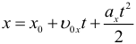
Скорость и время для тела падающее с высоты h без начальной скорости:
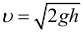 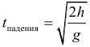
Максимальная высота на которую поднимется тело, брошенное вертикально вверх с начальной скоростью v0, время подъема этого тела на максимальную высоту, и полное время полета (до возвращения в исходную точку):
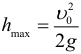
 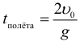
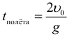Формула для тормозного пути тела:

Время падения тела при горизонтальном броске с высоты H может быть найдено по формуле:

Определение периода вращения при равномерном движении по окружности:
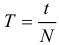
Определение частоты вращения при равномерном движении по окружности:

Связь периода и частоты:

Линейная скорость при равномерном движении по окружности может быть найдена по формулам:

Связь линейной и скорости и угловой скорости выражается формулой:
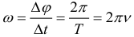
Связь угла поворота и пути при равномерном движении по окружности радиусом R (фактически, это просто формула для длины дуги из геометрии):
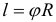
Центростремительное ускорение находится по одной из формул:

Второй закон Ньютона:

Здесь: F - равнодействующая сила, которая равна сумме всех сил действующих на тело:

Третий закон Ньютона (сила действия равна силе противодействия):
Сила упругости:

Общий коэффициент жесткости последовательно соединённых пружин:

Закон всемирного тяготения:

Если рассмотреть тело на поверхности планеты и ввести следующее обозначение:
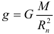
Где: g - ускорение свободного падения на поверхности данной планеты, то получим следующую формулу для силы тяжести:
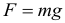
Ускорение свободного падения на некоторой высоте от поверхности планеты выражается формулой:
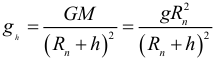/br> Скорость спутника на круговой орбите:

Первая космическая скорость:

Момент силы определяется с помощью следующей формулы:

Условие при котором тело не будет вращаться:

Координата центра тяжести системы тел (аналогичные уравнения для остальных осей):

Импульс тела находится по следующей формуле:
Изменение импульса тела или системы тел (обратите внимание, что разность конечного и начального импульсов векторная):
Общий импульс системы тел (важно то, что сумма векторная):
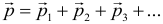
Второй закон Ньютона в импульсной форме может быть записан в виде следующей формулы:
Закон сохранения импульса. Как следует из предыдущей формулы, в случае если на систему тел не действует внешних сил, либо действие внешних сил скомпенсировано (равнодействующая сила равна нолю), то изменение импульса равно нолю, что означает, что общий импульс системы сохраняется:

Если внешние силы не действуют только вдоль одной из осей, то сохраняется проекция импульса на данную ось, например:
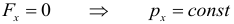
Механическая работа рассчитывается по следующей формуле:
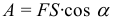
Самая общая формула для мощности (если мощность переменная, то по следующей формуле рассчитывается средняя мощность), Мгновенная механическая мощность:
Коэффициент полезного действия (КПД) может быть рассчитан и через мощности и через работы:
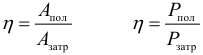
Формула для кинетической и Потенциальной энергии:
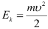

Потенциальная энергия растянутой (или сжатой) пружины:
Связь полной механической энергии тела или системы тел и работы внешних сил:

Закон сохранения механической энергии (далее – ЗСЭ). Как следует из предыдущей формулы, если внешние силы не совершают работы над телом (или системой тел), то его (их) общая полная механическая энергия остается постоянной, при этом энергия может перетекать из одного вида в другой (из кинетической в потенциальную или наоборот):
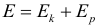

Количество теплоты (энергии) необходимое для нагревания некоторого тела (или количество теплоты выделяющееся при остывании тела) рассчитывается по формуле:
 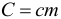
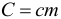Теплоемкость (С - большое) тела может быть рассчитана через удельную теплоёмкость (c - маленькое) вещества и массу тела по следующей формуле:
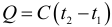
| Материал | Удельная теплоёмкость | Материал | Удельная теплоёмкость | Материал | Удельная теплоёмкость |
|---|---|---|---|---|---|
| Золото | 130 | Железо | 460 | Масло растительное | 2000 |
| Ртуть | 140 | Сталь | 500 | Лёд | 2100 |
| Свинец | 140 | Чугун | 540 | Керосин | 2100 |
| Олово | 230 | Кирпич | 750 | Эфир | 2350 |
| Серебро | 250 | Алюминий | 920 | Спирт | 2500 |
| Материал | Удельная теплота парообразования | Материал | Удельная теплота парообразования |
|---|---|---|---|
| Вода | 2,3x106 | Аммиак | 1,4x106 |
| Срирт | 0,9x106 | Эфир | 0,4x106 |
| Ртуть | 0,3x106 | Воздух | 0,2x106 |
| Материал | Удельная теплота плавления | Материал | Удельная теплота плавления |
|---|---|---|---|
| Алюминий | 3,9x105 | Сталь | 0,84x105 |
| Лёд | 3,4x105 | Золото | 0,67x105 |
| Железо | 2,7x105 | Олово | 0,59x105 |
| Медь | 2,1x105 | Свинец | 0,25x105 |
| Серебро | 0,87x105 | Ртуть | 0,12x105 |

| Материал | Удельная теплота сгорания | Материал | Удельная теплота сгорания |
|---|---|---|---|
| Порох | 0,38x107 | Древесный уголь | 3,4x107 |
| Дрова сухие | 1x107 | Природный газ | 4,4x107 |
| Торф | 1,4x107 | Нефть | 4,4x107 |
| Каменный уголь | 2,7x107 | Бензин | 4,6x107 |
| Спирт | 2,7x107 | Керосин | 4,6x107 |
| Антрацит | 3x107 | Водород | 12x107 |

Сопротивление проводника:
Закон Ома (выражает зависимость силы тока от электрического напряжения и сопротивления), Закон Ома для полной цепи:
Закономерности последовательного соединения:
Закономерности параллельного соединения:
Работа электрического тока (закон Джоуля-Ленца). Работа А электрического тока протекающего по проводнику обладающему сопротивлением преобразуется в теплоту Q выделяющуюся на проводнике:
Мощность электрического тока:
КПД источника тока:
8. РАВНОМЕРНОЕ ДВИЖЕНИЕ ПО ОКРУЖНОСТИ
| ω=φ/t | T=t/N | v=N/t | L=фR | υ=L/t | |
|---|---|---|---|---|---|
| T | V | ω | υ | aцс | |
| T - период | T=1/v | T=2π/ω | T=2πR/υ | T=2π√(R/aцс) | |
| V - частот | v=1/T | v=ω/(2π) | v=υ/(2πR) | v=1/(2π)x(√R/aцс) | |
| ω - угловая скорость | ω=2π/T | ω=2πυ | ω=υ/R | ω=√(aцс/R) | |
| υ - линейная скорость | υ=2πR/T | υ=2υπR | υ=ωR | υ=√(aцсR) | |
| aцс - цетростремительное ускорение | aцс=4π2R/T2 | aцс=4π2υ2R | aцс=ω2R | aцс=υ2/R |